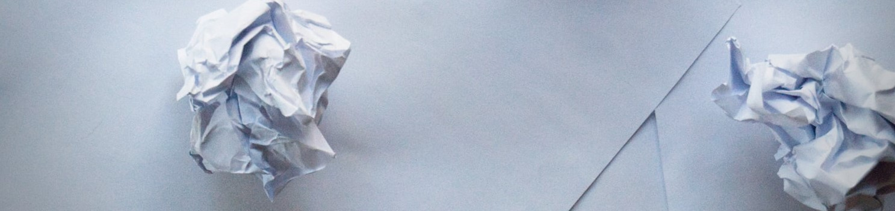
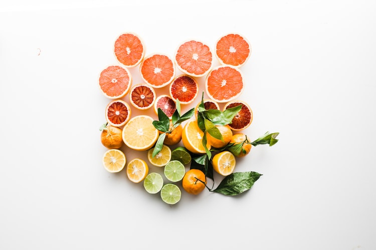

Want a Healthy Kitchen? Use Green Products
We have all seen or heard about the floating islands of trash in our oceans, much of it being plastic. As the plastics break down, particles are being consumed with the water and passed through the food chain. Already across the globe, young people are taking time away from school to urge stronger action by governments towards climate change.
Individually, we can all make a change to the future of the planet, through our daily living. The kitchen is the one room in the home that creates the most waste. This includes many single-use products like paper towels, carrier bags, cling-film and food bags, plastic water bottles and much more. You can create a healthy kitchen by removing waste and the use of green products that do not harm you or the atmosphere in which you live.
Alternatives
Time and money can sometimes get in the way of making the best choices for a healthy kitchen. Yet even the smallest changes to become eco-friendlier are good changes, so invest in a compost bin that you actually like for your kitchen and begin replacing your plastic food containers with sustainable glass food storage jars. Here are some other suggestions for a more sustainable kitchen.
Paper towels
Swap single-use paper towels with reusable cloth towels. You can invest in small microfibre cloths or make your own from strong cotton that can be kept under the sink to clean any kind of a mess. You can even buy or make “unpaper towels” with snaps that can be used on a conventional paper roll holder.
If you are washing windows, using scrunched up an old newspaper and a white vinegar spray will leave no marks. Alternatively, use a low-lint cotton cloth or a microfibre cloth.
Invest in linen napkins for when you’re eating, which wash well and look good if you are having guests around for dinner. Beeswax products can also be used to wrap foods and allow the food to breathe, so no more sweaty sandwiches on the move. This is a simple first step to becoming a healthy kitchen with green products.
Beeswax products can also be used to wrap foods and allow the food to breathe, so no more sweaty sandwiches on the move. This is a simple first step to becoming a healthy kitchen with green products.
Replace plastics
Bisphenol A (BPA) is found in the plastics that make up water bottles, baby bottles, and other food and drink packaging, which can leach into the water when it is cleaned. Plastic bottles that are warmed, such as in a car on a summer’s day, will also see the BPA solvent turn to liquid even faster. The toxicity of BPA will depend on dose and duration, but for many, the personal choice is to ditch plastics as much as possible.
Glass food-storage containers are the obvious solution to plastic containers. Glass canning jars, also known as Mason jars, are great for storing foods as the lids remain attached, used for bulk goods in the pantry and taken to the store when grocery shopping. The use of these jars can remove the need for aluminium foil, plastic wrap, wax paper, and Ziploc bags as they can be used in the fridge and freezer.
To replace your water bottle with a glass bottle, there are some that come with additional cushioning, with a double-seal silicone lid and a silicone sleeve for protection and insulation. There are BPA-free and are safe to use in the freezer, microwave, oven and dishwasher.
Cling-film, or plastic wrap, is used a lot to store left-over foods or to wrap foods for when you are on the move. To cut out the use of plastics in the kitchen, you can cover bowls in the fridge with plates or saucers. You can also use reusable bowl covers made from food-safe laminated cotton which can be wiped down and laundered when the job is done.
If you are looking for a microwave-safe bowl cover, look for one made from silicone, an inert material from which nothing can leach. There are also reusable silicone food bags in all sizes that have been described as a fully functional, self-sealing, non-plastic bag. These bags are airtight, can be sued in the freezer and microwave and even in boiling water. Use tea-towels as light-weight, breathable wrappings for bread and to cover bowls for short periods of time.
You can choose on your own how to live but if you aren't 100% sure - come here